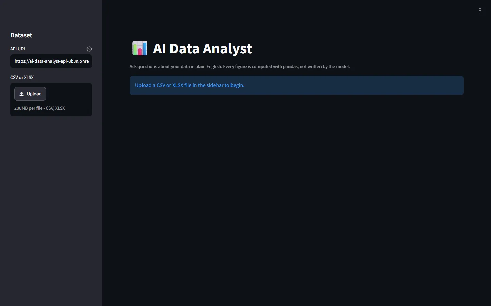

01AI · Data · Full-Stack
AI Data Analyst Agent
Upload a CSV or XLSX and ask questions in plain English. A bounded agent picks from a fixed set of pandas tools, pandas computes every number, and a grounding check flags any figure the computation doesn't support.
FastAPIStreamlitPandasGroq · GeminiDocker412 tests
